library(lme4)
library(kableExtra)
library(tidyverse)
library(patchwork)
library(sjPlot)
library(gt)JTF003-EC — Initial analysis report
1 Libraries
2 Data
The data is already been cleaned of Test responses
d <- read_csv("all_withNorway_noTest_countryFill_raw.csv")However, a couple more issues needs to be checked.
2.1 Bilendi issues
Bilendi specific: - For the following Bilendi data collection, only the cases labelled as “Complete” are “validated” (paid). They passed the attention check and completed > the study fully - Complete indicates if they are paid or not for this sample - Remember that we use a time requirement [like took it “too fast”] Zimbabwe and South Africa had less questions and then Egypt and Kuwait had a few questions removed . For the Zimbabwe, South Africa and Cameroon samples, we have removed the following 38 questions on the 31/05, before collecting more data (Note: So these participants should not be excluded based on non-completion because they did not have these measures.). The measures that were excluded are the following: ● Conspiracy scale (6 questions) ● Actively open-minded thinking (14 questions) ● Intellectual Humility (10 Questions) ● Centrality of Religiosity Scale (8 Questions)
However, I have checked and it does not seem that the 31/05 is a sharp transition?
A different approach is to check the demographics questions that were asked at the end, and use them as evidence for completion?
# All demographic variables, primarily for inspection
demographic_vars <- c(
"Age",
"Gender", "Gender_4_TEXT",
"Edu",
paste0("Employment_", 1:8),
"Employment_-999",
"Employment_8_TEXT",
"Student",
"Religion",
"Religion_spec",
"Religion_spec_8_TEXT",
"Country_Ori_YN",
"Country_Ori",
"Country_Res_YN",
"Country_Res",
"native_lang",
"lang_fluency"
)
# Early demographic questions: evidence that the participant
# at least started the demographic section
early_demo_vars <- c(
"Age",
"Gender",
"Edu"
)
# Late demographic questions: stronger evidence that the participant
# reached the end of the survey
late_demo_vars <- c(
"Country_Ori_YN",
"Country_Res_YN",
"native_lang",
"lang_fluency"
)
# Diagnostic table
bilendi_completion_check <- d %>%
mutate(
across(
any_of(demographic_vars),
~ if (is.character(.x)) na_if(trimws(.x), "") else .x)) %>%
mutate(
n_early_demo_answered = rowSums(
!is.na(across(all_of(early_demo_vars)))
),
n_late_demo_answered = rowSums(
!is.na(across(all_of(late_demo_vars)))
),
# At least one of Age, Gender, or Education was answered
started_demographics = n_early_demo_answered > 0,
# At least one of the final demographic questions was answered
reached_end_demographics = n_late_demo_answered > 0
)From the summary below we see that there are a number of participants in the Bilendi data (identified with fetch_id==4) who are not marked as Finished, but who reached the end of demographic questions:
bilendi_completion_check %>%
filter(fetch_id == 4) %>%
count(
Finished,
started_demographics,
reached_end_demographics,
name = "N"
) %>%
arrange(
Finished,
desc(reached_end_demographics),
desc(started_demographics)
)# A tibble: 5 × 4
Finished started_demographics reached_end_demographics N
<lgl> <lgl> <lgl> <int>
1 FALSE TRUE TRUE 203
2 FALSE TRUE FALSE 2
3 FALSE FALSE FALSE 777
4 TRUE TRUE TRUE 2131
5 TRUE FALSE FALSE 63We can correct these
d <- bilendi_completion_check %>%
mutate(
Finished_original = Finished,
Finished_corrected = case_when(
fetch_id == 4 &
!coalesce(Finished, FALSE) &
reached_end_demographics ~ TRUE,
TRUE ~ coalesce(Finished, FALSE)
)
)
# check how many have Finished status changed
d %>%
count(
Finished_original,
Finished_corrected,
name = "N"
)# A tibble: 3 × 3
Finished_original Finished_corrected N
<lgl> <lgl> <int>
1 FALSE FALSE 6325
2 FALSE TRUE 203
3 TRUE TRUE 175592.2 Exclusions
Exclusion criteria as stated in the preregistration:
We will exclude participants who did not complete the study, failed an attention check question, failed to pass the Captcha test (i.e., their Captcha score is equal to or lower than 0.5), or are not permanent residents of the geopolitical region where data collection is taking place.
| Exclusion Criterion | Number Excluded | Fraction Excluded | Percentage Excluded |
|---|---|---|---|
| Finished == 1 | 6325 | 0.2625898 | 26.258978 |
| Q_RecaptchaScore >= 0.5 | 938 | 0.0389422 | 3.894217 |
| attention check == 0 | 355 | 0.0147382 | 1.473824 |
| Country_Res_YN == Yes | 796 | 0.0330469 | 3.304687 |
| Total | 7820 | 0.3246565 | 32.465645 |
The incomplete response have quite a wide range of progress levels
hist(d$Progress[d$Finished!=1], xlim=c(0,100))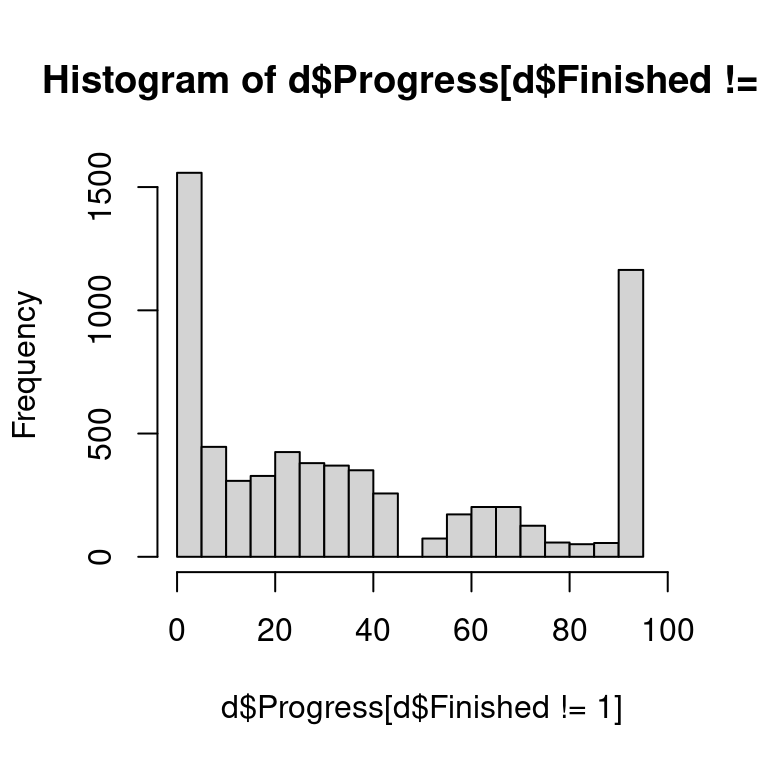
2.3 Countries/regions & collectivistic/individualistic categorisation
Countries included in the dataset, & number of responses per country
table(d$Country)
Albania Australia Austria Bangladesh Belgium
17 410 287 89 92
Brazil Bulgaria Cameroon Canada Chile
98 352 108 278 197
China Colombia Czech Republic Ecuador Egypt
136 372 158 2 183
Ethiopia France Germany Ghana Greece
109 166 373 110 273
Hong Kong Hungary India Indonesia Italy
70 226 275 123 896
Kenya Kuwait Malaysia Mexico Morocco
143 169 349 122 96
Netherlands New Zealand Nigeria North Macedonia Norway
383 104 144 186 79
Oman Pakistan Philippines Poland Portugal
40 257 414 452 219
Russia Serbia Sierra Leone Singapore Slovakia
201 220 146 176 236
South Africa Spain Switzerland Turkey United Kingdom
133 1449 97 1468 843
United States Vietnam Zimbabwe
1729 97 81 Remove participants who still have NA Country, representing 0.25% of the data.
d <- d %>%
filter(!is.na(Country))Add collectivistic/individualistic label
d <- d %>%
mutate(culture = case_when(
Country %in% c("Argentina", "Albania","Australia", "Austria", "Belgium", "Brazil",
"Bulgaria", "Canada", "Chile", "China", "Costa Rica", "Croatia",
"Czech Republic", "France", "Germany", "Greece", "Hong Kong",
"Hungary", "Israel", "Italy", "Japan", "Malaysia", "Netherlands",
"New Zealand", "Norway", "Poland", "Portugal", "Russia",
"Serbia", "Singapore", "Slovakia", "Slovenia", "South Africa",
"Spain", "Sweden", "Switzerland", "Taiwan", "United Kingdom",
"United States") ~ "Individualistic",
Country %in% c("Bangladesh", "Cameroon", "Colombia", "Ecuador", "Ethiopia",
"Egypt",
"Ghana", "India", "Indonesia", "Iran", "Kenya",
"Kuwait", "Malawi", "Mexico", "Morocco", "Namibia", "Nigeria",
"North Macedonia",
"Pakistan", "Peru", "Philippines", "Saudi Arabia", "Oman",
"Senegal", "Sierra Leone", "Sri Lanka", "Turkey", "Vietnam", "Zimbabwe") ~
"Collectivistic",
TRUE ~ "Unknown"
))
# how many per category?
table(d$culture)
Collectivistic Individualistic
4734 10699 2.4 Demographic summary
| Demographic | Value |
|---|---|
| Avearge age (Std.) | 26.20 (10.74) |
| Age Range | 18 to 99 |
| N. males | 4727 |
| N. female | 10350 |
| N. non binary | 143 |
| N. prefer not to respond | 152 |
| N. prefer to self-describe | 61 |
Split by cultural category:
| Demographic | Individualistic | Collectivistic |
|---|---|---|
| N participants | 10699 | 4734 |
| Average age (SD) | 26.79 (11.42) | 24.86 (8.88) |
| Age range | 18 to 99 | 18 to 97 |
| N males | 3135 | 1592 |
| N females | 7317 | 3033 |
| N non-binary | 121 | 22 |
| N prefer not to respond | 89 | 63 |
| N prefer to self-describe | 37 | 24 |
| Education level | Collectivistic, N (\%) | Individualistic, N (\%) |
|---|---|---|
| Less than a high school or secondary school degree (or equivalent) | 34 (0.7%) | 120 (1.1%) |
| High school or secondary school degree (or equivalent) | 2,212 (46.7%) | 6,582 (61.5%) |
| Bachelor’s degree (or equivalent) | 1,838 (38.8%) | 2,567 (24.0%) |
| Postgraduate degree (MA, PhD, JD, etc.) | 556 (11.7%) | 1,331 (12.4%) |
| Prefer not to respond | 94 (2.0%) | 99 (0.9%) |
3 Data quality checks
3.1 Use of external resources
| problem | Baseline | Feedback | Justification | Feedback + justification |
|---|---|---|---|---|
| Problem 1 | 6.60% (N = 259) | 6.79% (N = 267) | 7.65% (N = 288) | 7.06% (N = 269) |
| Problem 2 | 6.90% (N = 271) | 6.41% (N = 252) | 8.21% (N = 309) | 6.75% (N = 257) |
| Problem 3 | 10.24% (N = 402) | 9.58% (N = 377) | 11.66% (N = 439) | 11.29% (N = 430) |
| Problem 4 | 8.97% (N = 352) | 8.67% (N = 341) | 11.16% (N = 420) | 10.37% (N = 395) |
| Problem 5 | 9.53% (N = 374) | 9.94% (N = 391) | 11.29% (N = 425) | 11.76% (N = 448) |
| Problem 6 | 10.80% (N = 424) | 9.20% (N = 362) | 12.83% (N = 483) | 12.52% (N = 477) |
3.2 Familiarity
| problem | Baseline | Feedback | Justification | Feedback + justification |
|---|---|---|---|---|
| Problem 1 | 50.39% (N = 1978) | 52.75% (N = 2075) | 52.28% (N = 1968) | 54.96% (N = 2094) |
| Problem 2 | 45.10% (N = 1770) | 46.34% (N = 1823) | 45.35% (N = 1707) | 46.61% (N = 1776) |
| Problem 3 | 15.90% (N = 624) | 14.36% (N = 565) | 16.74% (N = 630) | 16.22% (N = 618) |
| Problem 4 | 31.16% (N = 1223) | 30.81% (N = 1212) | 31.72% (N = 1194) | 31.36% (N = 1195) |
| Problem 5 | 26.06% (N = 1023) | 25.37% (N = 998) | 27.42% (N = 1032) | 26.98% (N = 1028) |
| Problem 6 | 23.01% (N = 903) | 24.02% (N = 945) | 24.34% (N = 916) | 24.51% (N = 934) |
3.3 Language background
| Language background of participants | ||
|---|---|---|
| Response | N | % |
| Fluency among non-native speakers | ||
| Prefer not to respond | 21 | 1.0 |
| Beginner | 46 | 2.1 |
| Intermediate | 413 | 19.1 |
| Advanced | 973 | 45.0 |
| Expert/Proficient | 710 | 32.8 |
| Native speaker of the study language | ||
| Yes | 12973 | 85.0 |
| No | 2164 | 14.2 |
| Prefer not to respond | 123 | 0.8 |
| Fluency was assessed only among participants who reported that the study language was not their native language. | ||
4 Data transformation
We transform the data into a long format:
d <- d %>%
mutate(participant = row_number())
d_crt_long <- d %>%
# ID + cols matching 'crt#_i' or 'crt#_r'
select(participant, Country, culture, justification, feedback, matches('^crt[1-6]_[ir]$')) %>%
pivot_longer(
cols = matches('^crt[1-6]_[ir]$'),
names_to = 'item',
values_to = 'response'
) %>%
extract( # Extract 'problem' number and 'condition' from 'item'
item,
into = c('crt', 'problem', 'condition'),
regex = '(crt)([1-6])_([ir])'
) %>%
mutate(
problem = as.integer(problem),
condition = recode(condition, 'i' = 'intuitive', 'r' = 'reflexive')
) %>%
select(participant, problem, condition, response, justification, feedback, Country, culture)
# Pivot familiarity data (one value per participant-problem)
d_fam_long <- d %>%
pivot_longer(
cols = matches("^familiarity_[1-6]$"),
names_to = "fam_item",
values_to = "familiarity"
) %>%
mutate(problem = as.integer(str_extract(fam_item, "[1-6]"))) %>%
select(participant, problem, familiarity)
# Pivot ext_resources_use data (one value per participant-problem)
d_ext_long <- d %>%
pivot_longer(
cols = matches("^ext_resources_use_[1-6]$"),
names_to = "ext_item",
values_to = "ext_resources_use"
) %>%
mutate(problem = as.integer(str_extract(ext_item, "[1-6]"))) %>%
select(participant, problem, ext_resources_use)
# Pivot dot_crt responses (one value per participant-problem)
d_dot_long <- d %>%
pivot_longer(
cols = matches("^dot_crt[1-6]$"),
names_to = "dot_item",
values_to = "dot_response"
) %>%
mutate(problem = as.integer(str_extract(dot_item, "[1-6]"))) %>%
select(participant, problem, dot_response)
# correct answers to dot problems (double checked on Qualtrics) *** MATTEO: TO CHECK
dot_correct <- c(3,2,4,2,1, 3)
d_dot_long <- d_dot_long %>%
mutate(dot_accuracy = ifelse(dot_response==dot_correct[d_dot_long$problem], 1, 0))
# Join everything together
d_long <- d_crt_long %>%
left_join(d_fam_long, by = c("participant","problem")) %>%
left_join(d_ext_long, by = c("participant","problem")) %>%
left_join(d_dot_long, by = c("participant","problem")) %>%
# Now each (participant, problem) has two rows (for each phase),
# and familiarity and ext_resources_use are duplicated for both.
select(participant, response, justification, feedback, problem,
condition, problem, familiarity, ext_resources_use, dot_accuracy,
Country, culture)
# check output
str(d_long)tibble [185,196 × 11] (S3: tbl_df/tbl/data.frame)
$ participant : int [1:185196] 1 1 1 1 1 1 1 1 1 1 ...
$ response : num [1:185196] 2 NA 3 2 2 3 1 1 4 2 ...
$ justification : chr [1:185196] "J" "J" "J" "J" ...
$ feedback : chr [1:185196] "NF" "NF" "NF" "NF" ...
$ problem : int [1:185196] 1 2 3 4 5 6 1 2 3 4 ...
$ condition : chr [1:185196] "intuitive" "intuitive" "intuitive" "intuitive" ...
$ familiarity : chr [1:185196] "Yes" "No" "No" "No" ...
$ ext_resources_use: chr [1:185196] "No" "No" "No" "No" ...
$ dot_accuracy : num [1:185196] 1 1 1 0 1 1 1 1 1 0 ...
$ Country : chr [1:185196] "Canada" "Canada" "Canada" "Canada" ...
$ culture : chr [1:185196] "Individualistic" "Individualistic" "Individualistic" "Individualistic" ...Next we add response accuracy (the response option “1” was always the correct one)
# # change any -99 to NA
# d_long$response <- ifelse(d_long$response==-99, NA, d_long$response)
# compute accuracy
d_long$accuracy <- ifelse(!is.na(d_long$response),
ifelse(d_long$response==1,1,0),
d_long$response)Raw mean accuracy
aggregate(accuracy ~ I(paste(justification, feedback)) + condition,
data=d_long, mean) I(paste(justification, feedback)) condition accuracy
1 J F intuitive 0.2974131
2 J NF intuitive 0.2961667
3 NJ F intuitive 0.3044707
4 NJ NF intuitive 0.3033570
5 J F reflexive 0.6813211
6 J NF reflexive 0.5853259
7 NJ F reflexive 0.6094306
8 NJ NF reflexive 0.5150318Now removing responses with familiarity and/or external resources use
aggregate(accuracy ~ I(paste(justification, feedback)) + condition,
data=d_long[d_long$familiarity=="No" & d_long$ext_resources_use=="No",],
mean) I(paste(justification, feedback)) condition accuracy
1 J F intuitive 0.2020897
2 J NF intuitive 0.2047733
3 NJ F intuitive 0.2094315
4 NJ NF intuitive 0.2050811
5 J F reflexive 0.6133130
6 J NF reflexive 0.5081431
7 NJ F reflexive 0.5298543
8 NJ NF reflexive 0.42069864.1 Dot accuracy (concurrent memory task in the intuitive phase 1)
We can check the accuracy of responses to the dot task in the intuitive phase
mean(d_long$dot_accuracy)[1] 0.9251172with(d_long, tapply(dot_accuracy, problem, mean)) 1 2 3 4 5 6
0.9503013 0.9484870 0.8775352 0.9343614 0.9350742 0.9049440 4.2 Prepare data for modelling
In order to enter the data in the models specified as in the pre-registration, we need some additional steps. We first transform the data such that the responses in the two phases are on distinct columns:
d_all <- d_long %>%
pivot_wider(
names_from = condition,
values_from = c(response, accuracy),
names_sep = "_")
str(d_all)tibble [92,598 × 13] (S3: tbl_df/tbl/data.frame)
$ participant : int [1:92598] 1 1 1 1 1 1 2 2 2 2 ...
$ justification : chr [1:92598] "J" "J" "J" "J" ...
$ feedback : chr [1:92598] "NF" "NF" "NF" "NF" ...
$ problem : int [1:92598] 1 2 3 4 5 6 1 2 3 4 ...
$ familiarity : chr [1:92598] "Yes" "No" "No" "No" ...
$ ext_resources_use : chr [1:92598] "No" "No" "No" "No" ...
$ dot_accuracy : num [1:92598] 1 1 1 0 1 1 1 1 0 1 ...
$ Country : chr [1:92598] "Canada" "Canada" "Canada" "Canada" ...
$ culture : chr [1:92598] "Individualistic" "Individualistic" "Individualistic" "Individualistic" ...
$ response_intuitive: num [1:92598] 2 NA 3 2 2 3 4 1 1 1 ...
$ response_reflexive: num [1:92598] 1 1 4 2 2 1 1 1 1 1 ...
$ accuracy_intuitive: num [1:92598] 0 NA 0 0 0 0 0 1 1 1 ...
$ accuracy_reflexive: num [1:92598] 1 1 0 0 0 1 1 1 1 1 ...4.3 Apply exclusions
The preregistration included further hypothesis-specific exclusion criteria:
For the variable included in Hypothesis 1, we will exclude trials in which participants indicated that they used external resources to solve the problems, reported familiarity with the problem, failed to answer on time, or failed to answer the concurrent working memory load task correctly. For the dependent variable used in Hypotheses 2 and 3, we will exclude trials where the phase 1 response was correct; thus, participants who initially did not commit at least one error in one of the six problems will be excluded. Trials where participants indicate external resource use will also be excluded.
One concern is that excluding based on familiarity response means we are excluding as much as half or more responses for some problems. However, familiarity does seem to influence accuracy, as shown in the table below:
| justification | feedback | familiarity | intuitive | reflexive |
|---|---|---|---|---|
| J | F | No | 0.20 | 0.65 |
| J | F | Yes | 0.48 | 0.82 |
| J | NF | No | 0.20 | 0.52 |
| J | NF | Yes | 0.48 | 0.74 |
| NJ | F | No | 0.21 | 0.58 |
| NJ | F | Yes | 0.49 | 0.79 |
| NJ | NF | No | 0.20 | 0.44 |
| NJ | NF | Yes | 0.50 | 0.71 |
We apply exclusions for the dataset to test H1 as follow
d_all_H1 <- d_all %>%
filter(ext_resources_use=="No",
familiarity=="No",
dot_accuracy==1)After exclusions, the mean accuracy values are the following:
| justification | feedback | intuitive | reflexive |
|---|---|---|---|
| J | F | 0.20 | 0.65 |
| J | NF | 0.21 | 0.52 |
| NJ | F | 0.21 | 0.57 |
| NJ | NF | 0.21 | 0.43 |
4.4 Compute dependent variables for specific hypotheses
For Hypothesis 1 ( “less than half of correct answers will arise from error correction during deliberation” ) we restrict analyses to all correct responses, and examine the proportion of correct responses made in phase 2 out of all correct responses:
dat_H1 <- d_all_H1 %>%
filter(accuracy_intuitive == 1 | accuracy_reflexive == 1) %>% # keep only correct, either at phase 1 or 2
filter(!is.na(accuracy_intuitive)) %>% # excluded missing responses in phase 1
mutate(correct_phase2 = ifelse(accuracy_intuitive == 0, accuracy_reflexive, 0)) %>%
select(correct_phase2, participant, problem, justification, feedback, Country, culture)
str(dat_H1)tibble [24,590 × 7] (S3: tbl_df/tbl/data.frame)
$ correct_phase2: num [1:24590] 1 1 0 0 1 0 1 1 1 1 ...
$ participant : int [1:24590] 1 2 2 2 2 4 6 6 6 7 ...
$ problem : int [1:24590] 6 1 2 4 5 2 3 4 5 1 ...
$ justification : chr [1:24590] "J" "J" "J" "J" ...
$ feedback : chr [1:24590] "NF" "F" "F" "F" ...
$ Country : chr [1:24590] "Canada" "Canada" "Canada" "Canada" ...
$ culture : chr [1:24590] "Individualistic" "Individualistic" "Individualistic" "Individualistic" ...Note that from the dataset for H1 I am excluding missing phase 1 responses. This is because we cannot know whether participant would have responded correctly or not in phase 1 for those problems.
The remaining hypotheses concern the probability intuitive incorrect answers (errors in phase 1) are corrected in the reflexive phase (phase 2). These hypotheses are not relevant for the pilot since we have only 1 condition. We can still use this data to estimate the probability of correction in the baseline condition.
# The other hypotheses
dat_Hother <- d_all %>%
filter(accuracy_intuitive == 0, # keep only intuitive errors
ext_resources_use=="No") %>% # exclude also external resource use
mutate(corrected = accuracy_reflexive) %>%
select(corrected, participant, problem, justification, feedback, Country, culture)
str(dat_Hother)tibble [48,693 × 7] (S3: tbl_df/tbl/data.frame)
$ corrected : num [1:48693] 1 0 0 0 1 1 1 1 0 0 ...
$ participant : int [1:48693] 1 1 1 1 1 2 2 4 4 4 ...
$ problem : int [1:48693] 1 3 4 5 6 1 5 1 3 4 ...
$ justification: chr [1:48693] "J" "J" "J" "J" ...
$ feedback : chr [1:48693] "NF" "NF" "NF" "NF" ...
$ Country : chr [1:48693] "Canada" "Canada" "Canada" "Canada" ...
$ culture : chr [1:48693] "Individualistic" "Individualistic" "Individualistic" "Individualistic" ...5 Data summaries
5.1 Accuracy
Proportion of correct responses split by item and phase (Note: this is after applying H1 exclusion criteria — thus excluding based on familiarity and use of external resources).
| justification | feedback | problem | intuitive | reflexive |
|---|---|---|---|---|
| J | F | 1 | 0.20 | 0.75 |
| J | F | 2 | 0.43 | 0.85 |
| J | F | 3 | 0.10 | 0.53 |
| J | F | 4 | 0.23 | 0.75 |
| J | F | 5 | 0.08 | 0.47 |
| J | F | 6 | 0.22 | 0.62 |
| J | NF | 1 | 0.19 | 0.49 |
| J | NF | 2 | 0.42 | 0.75 |
| J | NF | 3 | 0.10 | 0.49 |
| J | NF | 4 | 0.25 | 0.57 |
| J | NF | 5 | 0.09 | 0.35 |
| J | NF | 6 | 0.22 | 0.48 |
| NJ | F | 1 | 0.21 | 0.75 |
| NJ | F | 2 | 0.40 | 0.81 |
| NJ | F | 3 | 0.11 | 0.38 |
| NJ | F | 4 | 0.27 | 0.71 |
| NJ | F | 5 | 0.09 | 0.35 |
| NJ | F | 6 | 0.23 | 0.55 |
| NJ | NF | 1 | 0.18 | 0.44 |
| NJ | NF | 2 | 0.41 | 0.67 |
| NJ | NF | 3 | 0.11 | 0.33 |
| NJ | NF | 4 | 0.25 | 0.50 |
| NJ | NF | 5 | 0.10 | 0.29 |
| NJ | NF | 6 | 0.23 | 0.39 |
5.2 Missing responses
The number of missing responses (trials in which participants did not respond in time)
| problem | prop_missing | N_missing |
|---|---|---|
| 1 | 0.04 | 542 |
| 2 | 0.14 | 2179 |
| 3 | 0.28 | 4351 |
| 4 | 0.09 | 1355 |
| 5 | 0.16 | 2543 |
| 6 | 0.27 | 4243 |
5.3 Responses correct in phase 1 and turned into errors in phase 2
Using the data transformed as in the object d_all above we can check how frequently participants made a correct response in phase 1, and changed it into an error in phase 2. The table below shows how many times this occurred for each CRT problem:
correct2error_table <- d_all %>%
filter(accuracy_intuitive == 1 | accuracy_reflexive == 1) %>%
select(accuracy_intuitive,accuracy_reflexive, problem) %>%
filter(accuracy_reflexive==0) %>%
group_by(problem) %>%
summarise(N = sum(accuracy_intuitive))
print(correct2error_table)# A tibble: 6 × 2
problem N
<int> <dbl>
1 1 110
2 2 337
3 3 275
4 4 549
5 5 353
6 6 501Overall across all problems this occurred 2125 times.
5.4 Confidence calibration
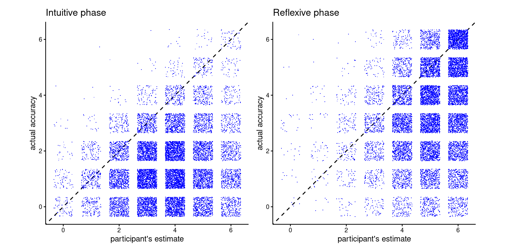
5.4.1 Confidence error and confidence bias
For this type of question, the squared error provide a proper scoring rule assuming participant’s expected number correct (squared error is uniquely minimised, in expectation, by reporting the subjective mean).
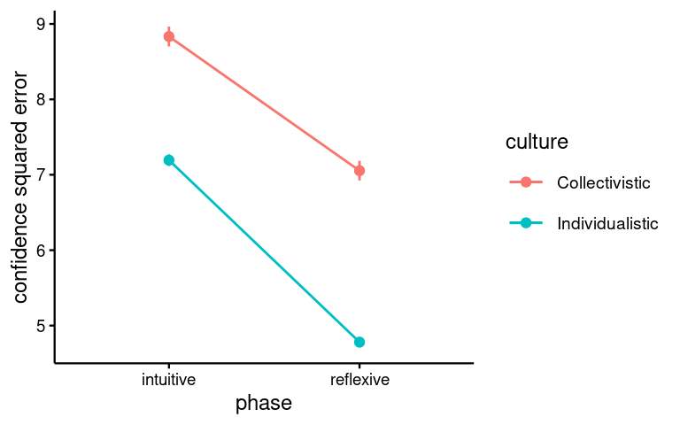
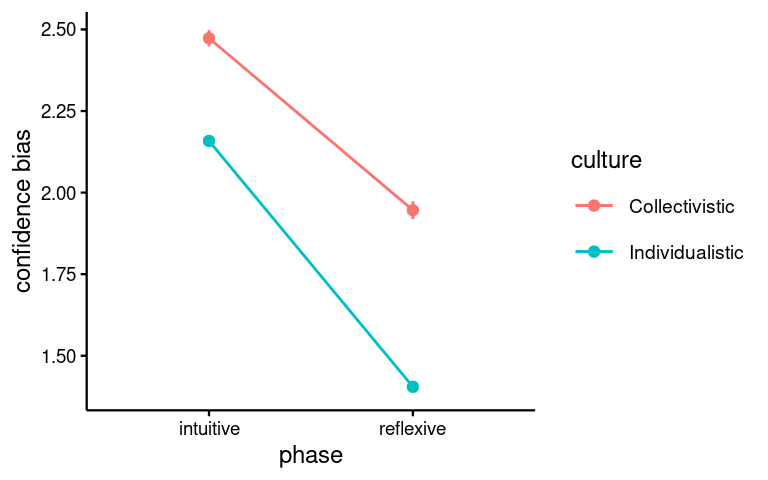
5.4.2 Confidence squared-error maps
This is purely explorative — I tried to do some maps of the confidence calibration question.
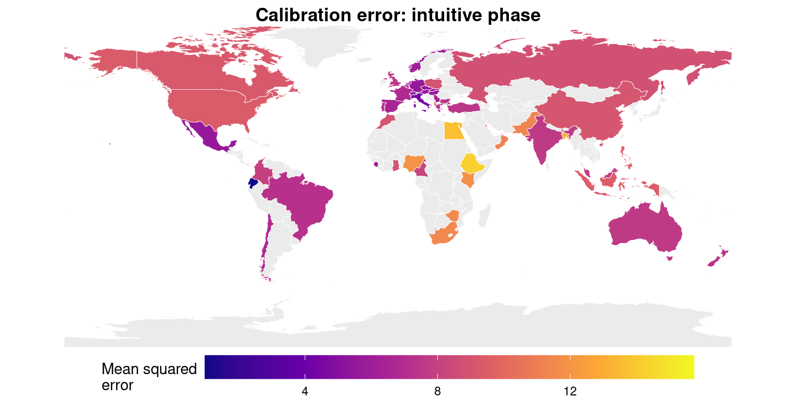
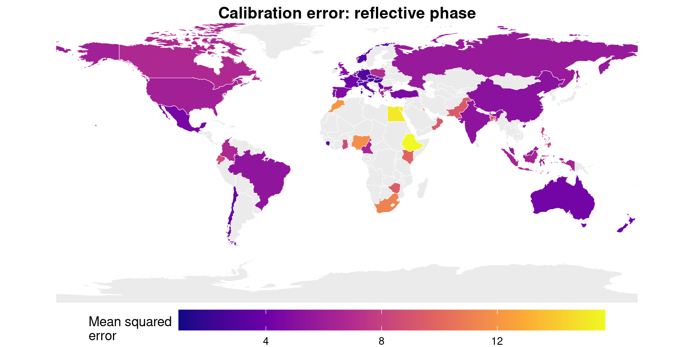
5.4.3 Confidence bias maps
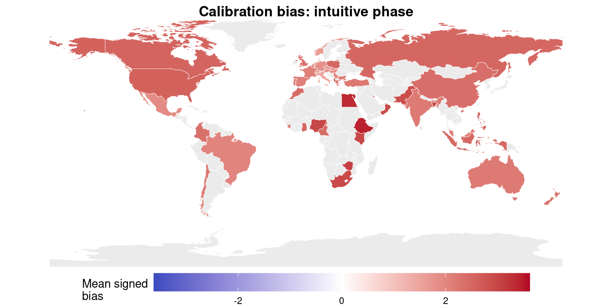
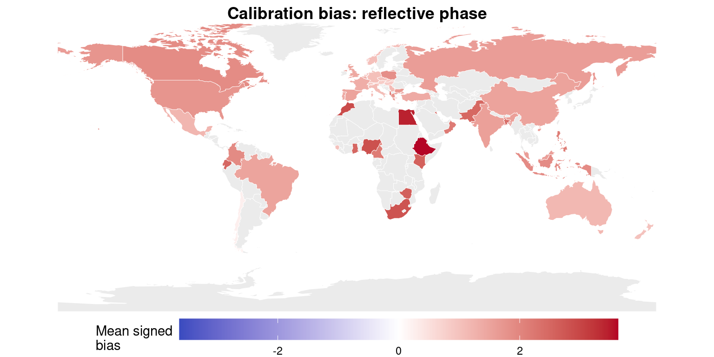
6 Analyses
Recode justification and feedback as dummy variables
dat_H1$justification <- ifelse(dat_H1$justification=="J", 1, 0)
dat_H1$feedback <- ifelse(dat_H1$feedback=="F", 1, 0)
dat_Hother$justification <- ifelse(dat_Hother$justification=="J", 1, 0)
dat_Hother$feedback <- ifelse(dat_Hother$feedback=="F", 1, 0)6.1 H1
A plot of the variable for H1, that is the probability that a correct decision is made in phase 2 rather than in phase 1, already suggests that in general this probability is not below 0.5
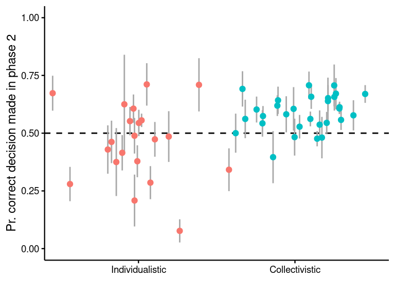
Fit models for H1
mH1_all <- glmer(correct_phase2 ~ feedback * justification +
(feedback * justification||Country),
family = binomial("logit"), data = dat_H1,
control = glmerControl(optimizer = "bobyqa",
optCtrl = list(maxfun = 1e5)))
summary(mH1_all)Generalized linear mixed model fit by maximum likelihood (Laplace
Approximation) [glmerMod]
Family: binomial ( logit )
Formula:
correct_phase2 ~ feedback * justification + (feedback * justification ||
Country)
Data: dat_H1
Control: glmerControl(optimizer = "bobyqa", optCtrl = list(maxfun = 1e+05))
AIC BIC logLik deviance df.resid
31542.3 31607.2 -15763.2 31526.3 24582
Scaled residuals:
Min 1Q Median 3Q Max
-2.0704 -1.2070 0.6378 0.7555 1.6492
Random effects:
Groups Name Variance Std.Dev.
Country (Intercept) 2.032e-01 4.507e-01
Country.1 feedback 4.988e-10 2.233e-05
Country.2 justification 4.144e-17 6.437e-09
Country.3 feedback:justification 6.957e-13 8.341e-07
Number of obs: 24590, groups: Country, 53
Fixed effects:
Estimate Std. Error z value Pr(>|z|)
(Intercept) 0.13962 0.07016 1.990 0.0466 *
feedback 0.34753 0.03831 9.072 < 2e-16 ***
justification 0.24985 0.03946 6.332 2.42e-10 ***
feedback:justification -0.03926 0.05413 -0.725 0.4683
---
Signif. codes: 0 '***' 0.001 '**' 0.01 '*' 0.05 '.' 0.1 ' ' 1
Correlation of Fixed Effects:
(Intr) fedbck jstfct
feedback -0.297
justificatn -0.286 0.522
fdbck:jstfc 0.209 -0.707 -0.728
optimizer (bobyqa) convergence code: 0 (OK)
boundary (singular) fit: see help('isSingular')# fit country_group-level models for individualistic and collectivistic
mH1_i <- glmer(correct_phase2 ~ feedback * justification +
(feedback * justification||Country),
family = binomial("logit"),
data = dat_H1[dat_H1$culture == "Individualistic", ],
control = glmerControl(optimizer = "bobyqa",
optCtrl = list(maxfun = 1e5)))
summary(mH1_i) Generalized linear mixed model fit by maximum likelihood (Laplace
Approximation) [glmerMod]
Family: binomial ( logit )
Formula:
correct_phase2 ~ feedback * justification + (feedback * justification ||
Country)
Data: dat_H1[dat_H1$culture == "Individualistic", ]
Control: glmerControl(optimizer = "bobyqa", optCtrl = list(maxfun = 1e+05))
AIC BIC logLik deviance df.resid
23594.1 23656.8 -11789.1 23578.1 18617
Scaled residuals:
Min 1Q Median 3Q Max
-2.0374 -1.2370 0.6316 0.7284 1.0827
Random effects:
Groups Name Variance Std.Dev.
Country (Intercept) 5.515e-02 2.348e-01
Country.1 feedback 1.893e-03 4.350e-02
Country.2 justification 3.696e-14 1.922e-07
Country.3 feedback:justification 0.000e+00 0.000e+00
Number of obs: 18625, groups: Country, 31
Fixed effects:
Estimate Std. Error z value Pr(>|z|)
(Intercept) 0.343689 0.056019 6.135 8.51e-10 ***
feedback 0.341169 0.048350 7.056 1.71e-12 ***
justification 0.243230 0.045456 5.351 8.75e-08 ***
feedback:justification -0.008226 0.062592 -0.131 0.895
---
Signif. codes: 0 '***' 0.001 '**' 0.01 '*' 0.05 '.' 0.1 ' ' 1
Correlation of Fixed Effects:
(Intr) fedbck jstfct
feedback -0.449
justificatn -0.410 0.478
fdbck:jstfc 0.294 -0.642 -0.725
optimizer (bobyqa) convergence code: 0 (OK)
boundary (singular) fit: see help('isSingular')mH1_c <- glmer(correct_phase2 ~ feedback * justification +
(feedback * justification||Country),
family = binomial("logit"),
data = dat_H1[dat_H1$culture == "Collectivistic", ],
control = glmerControl(optimizer = "bobyqa",
optCtrl = list(maxfun = 1e5)))
summary(mH1_c) Generalized linear mixed model fit by maximum likelihood (Laplace
Approximation) [glmerMod]
Family: binomial ( logit )
Formula:
correct_phase2 ~ feedback * justification + (feedback * justification ||
Country)
Data: dat_H1[dat_H1$culture == "Collectivistic", ]
Control: glmerControl(optimizer = "bobyqa", optCtrl = list(maxfun = 1e+05))
AIC BIC logLik deviance df.resid
7933.4 7986.9 -3958.7 7917.4 5957
Scaled residuals:
Min 1Q Median 3Q Max
-1.7087 -1.1172 0.6993 0.8188 1.7073
Random effects:
Groups Name Variance Std.Dev.
Country (Intercept) 0.2872 0.5359
Country.1 feedback 0.0000 0.0000
Country.2 justification 0.0000 0.0000
Country.3 feedback:justification 0.0000 0.0000
Number of obs: 5965, groups: Country, 22
Fixed effects:
Estimate Std. Error z value Pr(>|z|)
(Intercept) -0.16076 0.13205 -1.217 0.223428
feedback 0.35670 0.07672 4.650 3.33e-06 ***
justification 0.26644 0.07942 3.355 0.000794 ***
feedback:justification -0.12949 0.10798 -1.199 0.230475
---
Signif. codes: 0 '***' 0.001 '**' 0.01 '*' 0.05 '.' 0.1 ' ' 1
Correlation of Fixed Effects:
(Intr) fedbck jstfct
feedback -0.329
justificatn -0.313 0.536
fdbck:jstfc 0.232 -0.710 -0.733
optimizer (bobyqa) convergence code: 0 (OK)
boundary (singular) fit: see help('isSingular')
Note
The model formula was preregistered as correct_phase2 ~ feedback * justification + (feedback * justification||Country), however this gives a singular model warning. Convergence is OK, so fixed-effects estimates should be usable and are essentially unchanged compared to a simplified model (tested with the below direct comparison), so I am sticking to the pre-registered version.
m_full <- glmer(
correct_phase2 ~ feedback * justification +
(feedback * justification || Country),
family = binomial,
data = dat_H1
)
m_simple <- glmer(
correct_phase2 ~ feedback * justification +
(feedback || Country),
family = binomial,
data = dat_H1
)
cbind(
full = fixef(m_full),
simple = fixef(m_simple)
) full simple
(Intercept) 0.13963470 0.13962229
feedback 0.34752667 0.34753149
justification 0.24985294 0.24985523
feedback:justification -0.03925052 -0.03925502cbind(
full = sqrt(diag(vcov(m_full))),
simple = sqrt(diag(vcov(m_simple)))
) full simple
(Intercept) 0.07021097 0.07021526
feedback 0.03832611 0.03833518
justification 0.03947797 0.03948385
feedback:justification 0.05416177 0.05417391The first hypothesis is about the proportion of correct responses made in the reflective phase. We predicted that this would be lower than 50% in the baseline condition. It can be computed by transforming the intercept parameter from log-odds to probability:
exp(fixef(mH1_all)['(Intercept)'])/(1+exp(fixef(mH1_all)['(Intercept)']))(Intercept)
0.5348494 The hypothesis testing code, taken from the power analysis script and implementing one-tailed tests was:
alpha <- 0.05
# note: the tests on separate country_groups are independent one another
# (different countries, participants, labs, etc.), so the expected
# false positive rate of the composite test, run on the 2 country_group
# separately and using the conventional alpha = 0.05 for each test,
# would be 0.05^2 = 0.0025 (the hypothesis supported if and only if
# all 2 independent tests are significant). We don't also apply correction
# for multiple comparisons otherwise it would become too conservative.
# -----------
# H1
# One-tailed test for H1a
# Testing if the intercept is significantly less than 0
b_H1a <- fixef(mH1_all)["(Intercept)"]
SE_H1a <- sqrt(diag(vcov(mH1_all))["(Intercept)"])
z_H1a <- b_H1a / SE_H1a
p_value_H1a <- pnorm(z_H1a) # left-tailed test
H1a <- ifelse(p_value_H1a < alpha, 1, 0)
# One-tailed tests for H1b
models <- list(mH1_i, mH1_c)
names <- c("Individualistic", "Collectivistic")
H1b_pvals <- numeric(length(models))
H1b_results <- numeric(length(models))
for (i in 1:length(models)) {
b <- fixef(models[[i]])["(Intercept)"]
SE <- sqrt(diag(vcov(models[[i]]))["(Intercept)"])
z <- b / SE
p_value <- pnorm(z) # left-tailed test
H1b_pvals[i] <- p_value
H1b_results[i] <- ifelse(p_value < alpha, 1, 0)
}
names(H1b_pvals) <- names
names(H1b_results) <- names
# complete test
H1b <- ifelse(all(H1b_results == 1), 1, 0)6.2 H2
The models for the remaining hypotheses can be estimated as
# fit overall model
m_all <- glmer(corrected ~ feedback * justification +
(feedback * justification||Country),
family = binomial("logit"),
data = dat_Hother,
control = glmerControl(optimizer = "bobyqa",
optCtrl = list(maxfun = 1e5)))
summary(m_all)Generalized linear mixed model fit by maximum likelihood (Laplace
Approximation) [glmerMod]
Family: binomial ( logit )
Formula: corrected ~ feedback * justification + (feedback * justification ||
Country)
Data: dat_Hother
Control: glmerControl(optimizer = "bobyqa", optCtrl = list(maxfun = 1e+05))
AIC BIC logLik deviance df.resid
64931.6 65002.0 -32457.8 64915.6 48685
Scaled residuals:
Min 1Q Median 3Q Max
-2.2513 -0.9391 -0.5367 0.9515 2.8098
Random effects:
Groups Name Variance Std.Dev.
Country (Intercept) 0.224043 0.47333
Country.1 feedback 0.001666 0.04082
Country.2 justification 0.018484 0.13596
Country.3 feedback:justification 0.022398 0.14966
Number of obs: 48693, groups: Country, 53
Fixed effects:
Estimate Std. Error z value Pr(>|z|)
(Intercept) -0.56667 0.06927 -8.180 2.83e-16 ***
feedback 0.59802 0.02753 21.720 < 2e-16 ***
justification 0.38150 0.03573 10.676 < 2e-16 ***
feedback:justification -0.04113 0.04634 -0.888 0.375
---
Signif. codes: 0 '***' 0.001 '**' 0.01 '*' 0.05 '.' 0.1 ' ' 1
Correlation of Fixed Effects:
(Intr) fedbck jstfct
feedback -0.195
justificatn -0.177 0.366
fdbck:jstfc 0.102 -0.552 -0.483# fit country_group-level models for weird and non-weird
m_i <- glmer(corrected ~ feedback * justification +
(feedback * justification||Country),
family = binomial("logit"),
data = dat_Hother[dat_Hother$culture == "Individualistic", ],
control = glmerControl(optimizer = "bobyqa",
optCtrl = list(maxfun = 1e5)))
summary(m_i)Generalized linear mixed model fit by maximum likelihood (Laplace
Approximation) [glmerMod]
Family: binomial ( logit )
Formula: corrected ~ feedback * justification + (feedback * justification ||
Country)
Data: dat_Hother[dat_Hother$culture == "Individualistic", ]
Control: glmerControl(optimizer = "bobyqa", optCtrl = list(maxfun = 1e+05))
AIC BIC logLik deviance df.resid
46331.1 46398.8 -23157.6 46315.1 34607
Scaled residuals:
Min 1Q Median 3Q Max
-2.3763 -0.9639 0.5387 0.9237 1.7404
Random effects:
Groups Name Variance Std.Dev.
Country (Intercept) 1.180e-01 3.436e-01
Country.1 feedback 0.000e+00 0.000e+00
Country.2 justification 1.432e-02 1.197e-01
Country.3 feedback:justification 9.008e-10 3.001e-05
Number of obs: 34615, groups: Country, 31
Fixed effects:
Estimate Std. Error z value Pr(>|z|)
(Intercept) -0.380863 0.066947 -5.689 1.28e-08 ***
feedback 0.602197 0.030782 19.564 < 2e-16 ***
justification 0.403213 0.040797 9.883 < 2e-16 ***
feedback:justification 0.008418 0.044177 0.191 0.849
---
Signif. codes: 0 '***' 0.001 '**' 0.01 '*' 0.05 '.' 0.1 ' ' 1
Correlation of Fixed Effects:
(Intr) fedbck jstfct
feedback -0.233
justificatn -0.214 0.383
fdbck:jstfc 0.160 -0.696 -0.540
optimizer (bobyqa) convergence code: 0 (OK)
boundary (singular) fit: see help('isSingular')m_c <- glmer(corrected ~ feedback * justification +
(feedback * justification||Country),
family = binomial("logit"),
data = dat_Hother[dat_Hother$culture == "Collectivistic", ],
control = glmerControl(optimizer = "bobyqa",
optCtrl = list(maxfun = 1e5)))
summary(m_c)Generalized linear mixed model fit by maximum likelihood (Laplace
Approximation) [glmerMod]
Family: binomial ( logit )
Formula: corrected ~ feedback * justification + (feedback * justification ||
Country)
Data: dat_Hother[dat_Hother$culture == "Collectivistic", ]
Control: glmerControl(optimizer = "bobyqa", optCtrl = list(maxfun = 1e+05))
AIC BIC logLik deviance df.resid
18589.4 18649.8 -9286.7 18573.4 14070
Scaled residuals:
Min 1Q Median 3Q Max
-1.5734 -0.8647 -0.5980 1.0418 2.8459
Random effects:
Groups Name Variance Std.Dev.
Country (Intercept) 0.235623 0.48541
Country.1 feedback 0.004018 0.06339
Country.2 justification 0.024461 0.15640
Country.3 feedback:justification 0.046696 0.21609
Number of obs: 14078, groups: Country, 22
Fixed effects:
Estimate Std. Error z value Pr(>|z|)
(Intercept) -0.83668 0.11418 -7.328 2.34e-13 ***
feedback 0.60046 0.05721 10.495 < 2e-16 ***
justification 0.35362 0.06746 5.242 1.59e-07 ***
feedback:justification -0.15128 0.09346 -1.619 0.106
---
Signif. codes: 0 '***' 0.001 '**' 0.01 '*' 0.05 '.' 0.1 ' ' 1
Correlation of Fixed Effects:
(Intr) fedbck jstfct
feedback -0.253
justificatn -0.224 0.402
fdbck:jstfc 0.140 -0.552 -0.494Test pre-registered hypotheses
alpha <- 0.05
# -----------
# H2
# feedback increases correction rate
# One-tailed test for H2a
# Testing if the coefficient for 'feedback' is significantly greater than 0
b_H2a <- fixef(m_all)["feedback"]
SE_H2a <- sqrt(diag(vcov(m_all))["feedback"])
z_H2a <- b_H2a / SE_H2a
p_value_H2a <- 1 - pnorm(z_H2a) # right-tailed test
H2a <- ifelse(p_value_H2a < alpha, 1, 0)
# One-tailed tests for H2b
models <- list(m_i, m_c)
names <- c("Individualistic", "Collectivistic")
H2b_pvals <- numeric(length(models))
H2b_results <- numeric(length(models))
for (i in 1:length(models)) {
b <- fixef(models[[i]])["feedback"]
SE <- sqrt(diag(vcov(models[[i]]))["feedback"])
z <- b / SE
p_value <- 1 - pnorm(z) # right-tailed test
H2b_pvals[i] <- p_value
H2b_results[i] <- ifelse(p_value < alpha, 1, 0)
}
names(H2b_pvals) <- names
names(H2b_results) <- names6.3 H3
# -----------
# H3
# justification increases correction rate
# One-tailed test for H3a
# Testing if the coefficient for 'justification' is significantly greater than 0
b_H3a <- fixef(m_all)["justification"]
SE_H3a <- sqrt(diag(vcov(m_all))["justification"])
z_H3a <- b_H3a / SE_H3a
p_value_H3a <- 1 - pnorm(z_H3a) # right-tailed test
H3a <- ifelse(p_value_H3a < alpha, 1, 0)
# One-tailed tests for H3b
models <- list(m_i, m_c)
names <- c("Individualistic", "Collectivistic")
H3b_pvals <- numeric(length(models))
H3b_results <- numeric(length(models))
for (i in 1:length(models)) {
b <- fixef(models[[i]])["justification"]
SE <- sqrt(diag(vcov(models[[i]]))["justification"])
z <- b / SE
p_value <- 1 - pnorm(z) # right-tailed test
H3b_pvals[i] <- p_value
H3b_results[i] <- ifelse(p_value < alpha, 1, 0)
}
names(H3b_pvals) <- names
names(H3b_results) <- names6.4 Confirmatory hypothesis testing summary (pre-registered analyses)
| Hypothesis | Prediction | Supported | p-value(s) |
|---|---|---|---|
| H1a | Less than half of correct answers will arise from error correction during deliberation | No | .977 |
| H1b | Baseline performance is below 50% in both cultural groups | No | Individualistic = 1.000; Collectivistic = .112 |
| H2a | Feedback increases correction overall | Yes | < .001 |
| H2b | Feedback increases correction in both cultural groups | Yes | Individualistic = < .001; Collectivistic = < .001 |
| H3a | Justification increases correction overall | Yes | < .001 |
| H3b | Justification increases correction in both cultural groups | Yes | Individualistic = < .001; Collectivistic = < .001 |
7 Robustness & sensitivity checks
7.1 By-problem random intercepts
As problems differed substantially in accuracy etc. it makes sense to add problem-specific random interceps
7.1.1 H1
Fit models for H1
mH1_all <- glmer(correct_phase2 ~ feedback * justification +
(feedback * justification||Country)+ (1|problem),
family = binomial("logit"), data = dat_H1,
control = glmerControl(optimizer = "bobyqa",
optCtrl = list(maxfun = 1e5)))
summary(mH1_all )Generalized linear mixed model fit by maximum likelihood (Laplace
Approximation) [glmerMod]
Family: binomial ( logit )
Formula:
correct_phase2 ~ feedback * justification + (feedback * justification ||
Country) + (1 | problem)
Data: dat_H1
Control: glmerControl(optimizer = "bobyqa", optCtrl = list(maxfun = 1e+05))
AIC BIC logLik deviance df.resid
30471.6 30544.6 -15226.8 30453.6 24581
Scaled residuals:
Min 1Q Median 3Q Max
-2.9853 -1.0537 0.5404 0.7370 2.3630
Random effects:
Groups Name Variance Std.Dev.
Country (Intercept) 0.220492 0.46957
Country.1 feedback 0.006141 0.07837
Country.2 justification 0.000000 0.00000
Country.3 feedback:justification 0.002225 0.04717
problem (Intercept) 0.220268 0.46933
Number of obs: 24590, groups: Country, 53; problem, 6
Fixed effects:
Estimate Std. Error z value Pr(>|z|)
(Intercept) 0.23460 0.20436 1.148 0.251
feedback 0.35109 0.04338 8.093 5.84e-16 ***
justification 0.24297 0.04046 6.006 1.90e-09 ***
feedback:justification -0.05016 0.05633 -0.891 0.373
---
Signif. codes: 0 '***' 0.001 '**' 0.01 '*' 0.05 '.' 0.1 ' ' 1
Correlation of Fixed Effects:
(Intr) fedbck jstfct
feedback -0.107
justificatn -0.100 0.471
fdbck:jstfc 0.070 -0.626 -0.717
optimizer (bobyqa) convergence code: 0 (OK)
boundary (singular) fit: see help('isSingular')# fit country_group-level models for individualistic and collectivistic
mH1_i <- glmer(correct_phase2 ~ feedback * justification +
(feedback * justification||Country)+ (1|problem),
family = binomial("logit"),
data = dat_H1[dat_H1$culture == "Individualistic", ],
control = glmerControl(optimizer = "bobyqa",
optCtrl = list(maxfun = 1e5)))
summary(mH1_i)Generalized linear mixed model fit by maximum likelihood (Laplace
Approximation) [glmerMod]
Family: binomial ( logit )
Formula:
correct_phase2 ~ feedback * justification + (feedback * justification ||
Country) + (1 | problem)
Data: dat_H1[dat_H1$culture == "Individualistic", ]
Control: glmerControl(optimizer = "bobyqa", optCtrl = list(maxfun = 1e+05))
AIC BIC logLik deviance df.resid
22676.4 22746.9 -11329.2 22658.4 18616
Scaled residuals:
Min 1Q Median 3Q Max
-3.0407 -1.0719 0.5202 0.7236 1.5416
Random effects:
Groups Name Variance Std.Dev.
Country (Intercept) 6.673e-02 2.583e-01
Country.1 feedback 1.018e-02 1.009e-01
Country.2 justification 1.895e-13 4.354e-07
Country.3 feedback:justification 2.273e-03 4.768e-02
problem (Intercept) 2.567e-01 5.066e-01
Number of obs: 18625, groups: Country, 31; problem, 6
Fixed effects:
Estimate Std. Error z value Pr(>|z|)
(Intercept) 0.46002 0.21514 2.138 0.0325 *
feedback 0.33833 0.05220 6.481 9.10e-11 ***
justification 0.23232 0.04679 4.966 6.85e-07 ***
feedback:justification -0.01644 0.06560 -0.251 0.8021
---
Signif. codes: 0 '***' 0.001 '**' 0.01 '*' 0.05 '.' 0.1 ' ' 1
Correlation of Fixed Effects:
(Intr) fedbck jstfct
feedback -0.112
justificatn -0.109 0.451
fdbck:jstfc 0.076 -0.605 -0.713
optimizer (bobyqa) convergence code: 0 (OK)
boundary (singular) fit: see help('isSingular')mH1_c <- glmer(correct_phase2 ~ feedback * justification +
(feedback * justification||Country)+ (1|problem),
family = binomial("logit"),
data = dat_H1[dat_H1$culture == "Collectivistic", ],
control = glmerControl(optimizer = "bobyqa",
optCtrl = list(maxfun = 1e5)))
summary(mH1_c)Generalized linear mixed model fit by maximum likelihood (Laplace
Approximation) [glmerMod]
Family: binomial ( logit )
Formula:
correct_phase2 ~ feedback * justification + (feedback * justification ||
Country) + (1 | problem)
Data: dat_H1[dat_H1$culture == "Collectivistic", ]
Control: glmerControl(optimizer = "bobyqa", optCtrl = list(maxfun = 1e+05))
AIC BIC logLik deviance df.resid
7773.2 7833.4 -3877.6 7755.2 5956
Scaled residuals:
Min 1Q Median 3Q Max
-2.1071 -1.0037 0.6054 0.7915 2.3848
Random effects:
Groups Name Variance Std.Dev.
Country (Intercept) 3.075e-01 5.546e-01
Country.1 feedback 0.000e+00 0.000e+00
Country.2 justification 0.000e+00 0.000e+00
Country.3 feedback:justification 1.416e-12 1.190e-06
problem (Intercept) 1.419e-01 3.767e-01
Number of obs: 5965, groups: Country, 22; problem, 6
Fixed effects:
Estimate Std. Error z value Pr(>|z|)
(Intercept) -0.10527 0.20543 -0.512 0.608325
feedback 0.36774 0.07796 4.717 2.39e-06 ***
justification 0.26573 0.08071 3.293 0.000993 ***
feedback:justification -0.13592 0.10967 -1.239 0.215219
---
Signif. codes: 0 '***' 0.001 '**' 0.01 '*' 0.05 '.' 0.1 ' ' 1
Correlation of Fixed Effects:
(Intr) fedbck jstfct
feedback -0.213
justificatn -0.204 0.535
fdbck:jstfc 0.152 -0.709 -0.734
optimizer (bobyqa) convergence code: 0 (OK)
boundary (singular) fit: see help('isSingular')alpha <- 0.05
# note: the tests on separate country_groups are independent one another
# (different countries, participants, labs, etc.), so the expected
# false positive rate of the composite test, run on the 2 country_group
# separately and using the conventional alpha = 0.05 for each test,
# would be 0.05^2 = 0.0025 (the hypothesis supported if and only if
# all 2 independent tests are significant). We don't also apply correction
# for multiple comparisons otherwise it would become too conservative.
# -----------
# H1
# One-tailed test for H1a
# Testing if the intercept is significantly less than 0
b_H1a <- fixef(mH1_all)["(Intercept)"]
SE_H1a <- sqrt(diag(vcov(mH1_all))["(Intercept)"])
z_H1a <- b_H1a / SE_H1a
p_value_H1a <- pnorm(z_H1a) # left-tailed test
H1a <- ifelse(p_value_H1a < alpha, 1, 0)
# One-tailed tests for H1b
models <- list(mH1_i, mH1_c)
names <- c("Individualistic", "Collectivistic")
H1b_pvals <- numeric(length(models))
H1b_results <- numeric(length(models))
for (i in 1:length(models)) {
b <- fixef(models[[i]])["(Intercept)"]
SE <- sqrt(diag(vcov(models[[i]]))["(Intercept)"])
z <- b / SE
p_value <- pnorm(z) # left-tailed test
H1b_pvals[i] <- p_value
H1b_results[i] <- ifelse(p_value < alpha, 1, 0)
}
names(H1b_pvals) <- names
names(H1b_results) <- names7.1.2 H2
# fit overall model
m_all <- glmer(corrected ~ feedback * justification +
(feedback * justification||Country)+ (1|problem),
family = binomial("logit"),
data = dat_Hother,
control = glmerControl(optimizer = "bobyqa",
optCtrl = list(maxfun = 1e5)))
summary(m_all)Generalized linear mixed model fit by maximum likelihood (Laplace
Approximation) [glmerMod]
Family: binomial ( logit )
Formula: corrected ~ feedback * justification + (feedback * justification ||
Country) + (1 | problem)
Data: dat_Hother
Control: glmerControl(optimizer = "bobyqa", optCtrl = list(maxfun = 1e+05))
AIC BIC logLik deviance df.resid
62221.0 62300.1 -31101.5 62203.0 48684
Scaled residuals:
Min 1Q Median 3Q Max
-3.3763 -0.8781 -0.4479 0.8819 3.3383
Random effects:
Groups Name Variance Std.Dev.
Country (Intercept) 0.259202 0.50912
Country.1 feedback 0.003227 0.05681
Country.2 justification 0.023606 0.15364
Country.3 feedback:justification 0.027499 0.16583
problem (Intercept) 0.269691 0.51932
Number of obs: 48693, groups: Country, 53; problem, 6
Fixed effects:
Estimate Std. Error z value Pr(>|z|)
(Intercept) -0.54248 0.22445 -2.417 0.0157 *
feedback 0.63729 0.02941 21.671 <2e-16 ***
justification 0.40972 0.03818 10.732 <2e-16 ***
feedback:justification -0.04910 0.04883 -1.006 0.3146
---
Signif. codes: 0 '***' 0.001 '**' 0.01 '*' 0.05 '.' 0.1 ' ' 1
Correlation of Fixed Effects:
(Intr) fedbck jstfct
feedback -0.062
justificatn -0.056 0.348
fdbck:jstfc 0.033 -0.533 -0.466# fit country_group-level models for weird and non-weird
m_i <- glmer(corrected ~ feedback * justification +
(feedback * justification||Country)+ (1|problem),
family = binomial("logit"),
data = dat_Hother[dat_Hother$culture == "Individualistic", ],
control = glmerControl(optimizer = "bobyqa",
optCtrl = list(maxfun = 1e5)))
summary(m_i)Generalized linear mixed model fit by maximum likelihood (Laplace
Approximation) [glmerMod]
Family: binomial ( logit )
Formula: corrected ~ feedback * justification + (feedback * justification ||
Country) + (1 | problem)
Data: dat_Hother[dat_Hother$culture == "Individualistic", ]
Control: glmerControl(optimizer = "bobyqa", optCtrl = list(maxfun = 1e+05))
AIC BIC logLik deviance df.resid
44183.2 44259.3 -22082.6 44165.2 34606
Scaled residuals:
Min 1Q Median 3Q Max
-3.7000 -0.8911 0.4320 0.8535 2.4609
Random effects:
Groups Name Variance Std.Dev.
Country (Intercept) 1.458e-01 3.818e-01
Country.1 feedback 2.023e-14 1.422e-07
Country.2 justification 1.839e-02 1.356e-01
Country.3 feedback:justification 2.576e-13 5.075e-07
problem (Intercept) 3.049e-01 5.522e-01
Number of obs: 34615, groups: Country, 31; problem, 6
Fixed effects:
Estimate Std. Error z value Pr(>|z|)
(Intercept) -0.344653 0.236347 -1.458 0.145
feedback 0.647615 0.031872 20.319 <2e-16 ***
justification 0.435376 0.043599 9.986 <2e-16 ***
feedback:justification 0.002235 0.045641 0.049 0.961
---
Signif. codes: 0 '***' 0.001 '**' 0.01 '*' 0.05 '.' 0.1 ' ' 1
Correlation of Fixed Effects:
(Intr) fedbck jstfct
feedback -0.068
justificatn -0.062 0.372
fdbck:jstfc 0.047 -0.696 -0.523
optimizer (bobyqa) convergence code: 0 (OK)
boundary (singular) fit: see help('isSingular')m_c <- glmer(corrected ~ feedback * justification +
(feedback * justification||Country)+ (1|problem),
family = binomial("logit"),
data = dat_Hother[dat_Hother$culture == "Collectivistic", ],
control = glmerControl(optimizer = "bobyqa",
optCtrl = list(maxfun = 1e5)))
summary(m_c)Generalized linear mixed model fit by maximum likelihood (Laplace
Approximation) [glmerMod]
Family: binomial ( logit )
Formula: corrected ~ feedback * justification + (feedback * justification ||
Country) + (1 | problem)
Data: dat_Hother[dat_Hother$culture == "Collectivistic", ]
Control: glmerControl(optimizer = "bobyqa", optCtrl = list(maxfun = 1e+05))
AIC BIC logLik deviance df.resid
17889.5 17957.5 -8935.8 17871.5 14069
Scaled residuals:
Min 1Q Median 3Q Max
-2.2695 -0.8405 -0.5039 0.9467 2.8886
Random effects:
Groups Name Variance Std.Dev.
Country (Intercept) 0.267211 0.51692
Country.1 feedback 0.005844 0.07645
Country.2 justification 0.028916 0.17005
Country.3 feedback:justification 0.053052 0.23033
problem (Intercept) 0.244702 0.49467
Number of obs: 14078, groups: Country, 22; problem, 6
Fixed effects:
Estimate Std. Error z value Pr(>|z|)
(Intercept) -0.81854 0.23512 -3.481 0.000499 ***
feedback 0.63729 0.05961 10.690 < 2e-16 ***
justification 0.37731 0.07071 5.336 9.51e-08 ***
feedback:justification -0.15924 0.09719 -1.638 0.101333
---
Signif. codes: 0 '***' 0.001 '**' 0.01 '*' 0.05 '.' 0.1 ' ' 1
Correlation of Fixed Effects:
(Intr) fedbck jstfct
feedback -0.125
justificatn -0.111 0.390
fdbck:jstfc 0.069 -0.539 -0.483Test pre-registered hypotheses
alpha <- 0.05
# -----------
# H2
# feedback increases correction rate
# One-tailed test for H2a
# Testing if the coefficient for 'feedback' is significantly greater than 0
b_H2a <- fixef(m_all)["feedback"]
SE_H2a <- sqrt(diag(vcov(m_all))["feedback"])
z_H2a <- b_H2a / SE_H2a
p_value_H2a <- 1 - pnorm(z_H2a) # right-tailed test
H2a <- ifelse(p_value_H2a < alpha, 1, 0)
# One-tailed tests for H2b
models <- list(m_i, m_c)
names <- c("Individualistic", "Collectivistic")
H2b_pvals <- numeric(length(models))
H2b_results <- numeric(length(models))
for (i in 1:length(models)) {
b <- fixef(models[[i]])["feedback"]
SE <- sqrt(diag(vcov(models[[i]]))["feedback"])
z <- b / SE
p_value <- 1 - pnorm(z) # right-tailed test
H2b_pvals[i] <- p_value
H2b_results[i] <- ifelse(p_value < alpha, 1, 0)
}
names(H2b_pvals) <- names
names(H2b_results) <- names7.1.3 H3
# -----------
# H3
# justification increases correction rate
# One-tailed test for H3a
# Testing if the coefficient for 'justification' is significantly greater than 0
b_H3a <- fixef(m_all)["justification"]
SE_H3a <- sqrt(diag(vcov(m_all))["justification"])
z_H3a <- b_H3a / SE_H3a
p_value_H3a <- 1 - pnorm(z_H3a) # right-tailed test
H3a <- ifelse(p_value_H3a < alpha, 1, 0)
# One-tailed tests for H3b
models <- list(m_i, m_c)
names <- c("Individualistic", "Collectivistic")
H3b_pvals <- numeric(length(models))
H3b_results <- numeric(length(models))
for (i in 1:length(models)) {
b <- fixef(models[[i]])["justification"]
SE <- sqrt(diag(vcov(models[[i]]))["justification"])
z <- b / SE
p_value <- 1 - pnorm(z) # right-tailed test
H3b_pvals[i] <- p_value
H3b_results[i] <- ifelse(p_value < alpha, 1, 0)
}
names(H3b_pvals) <- names
names(H3b_results) <- names7.1.4 Hypothesis testing summary: by-problem random intercepts
| Hypothesis | Prediction | Supported | p-value(s) |
|---|---|---|---|
| H1a | Less than half of correct answers will arise from error correction during deliberation | No | .875 |
| H1b | Baseline performance is below 50% in both cultural groups | No | Individualistic = .984; Collectivistic = .304 |
| H2a | Feedback increases correction overall | Yes | < .001 |
| H2b | Feedback increases correction in both cultural groups | Yes | Individualistic = < .001; Collectivistic = < .001 |
| H3a | Justification increases correction overall | Yes | < .001 |
| H3b | Justification increases correction in both cultural groups | Yes | Individualistic = < .001; Collectivistic = < .001 |
8 Model-based maps
8.1 Maps for H1 variable
These maps are based on the models with by-problem random intercepts included
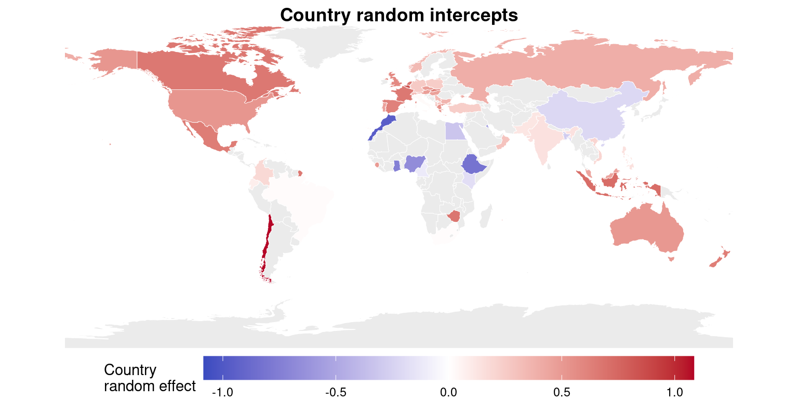
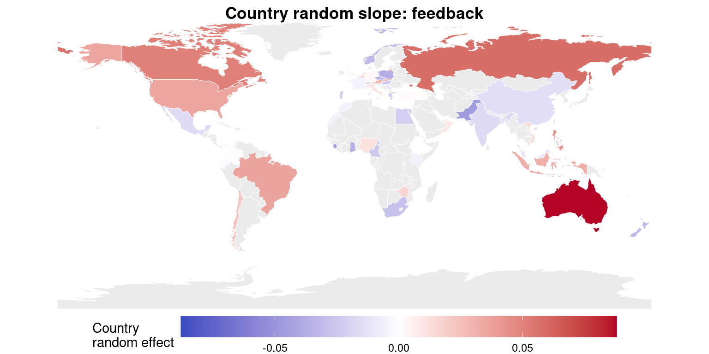
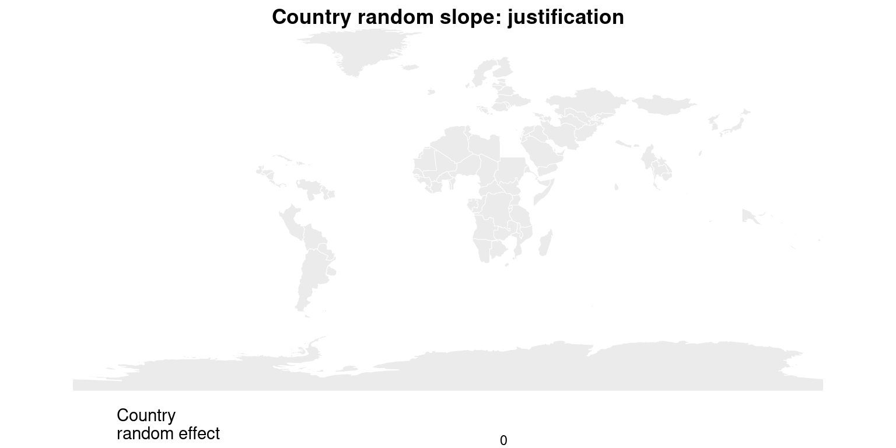
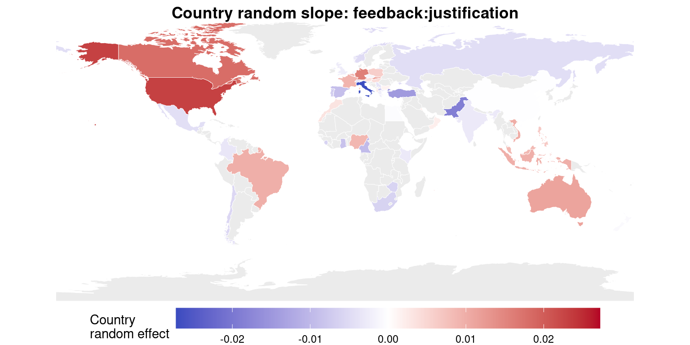
8.2 Maps for H2 and H3 variable
These maps are based on the models with by-problem random intercepts included
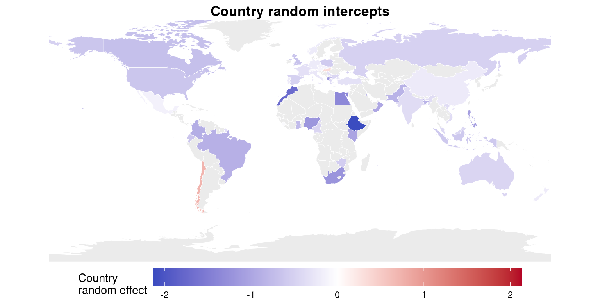
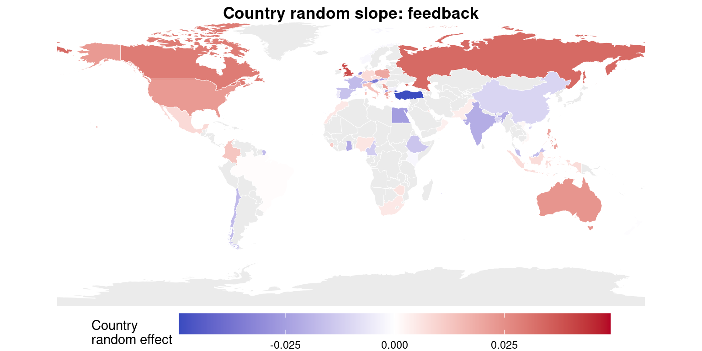
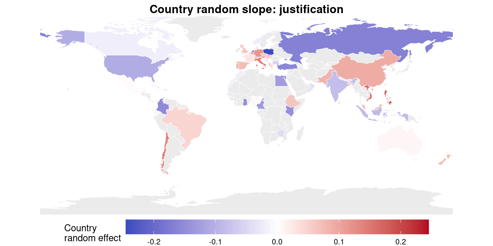
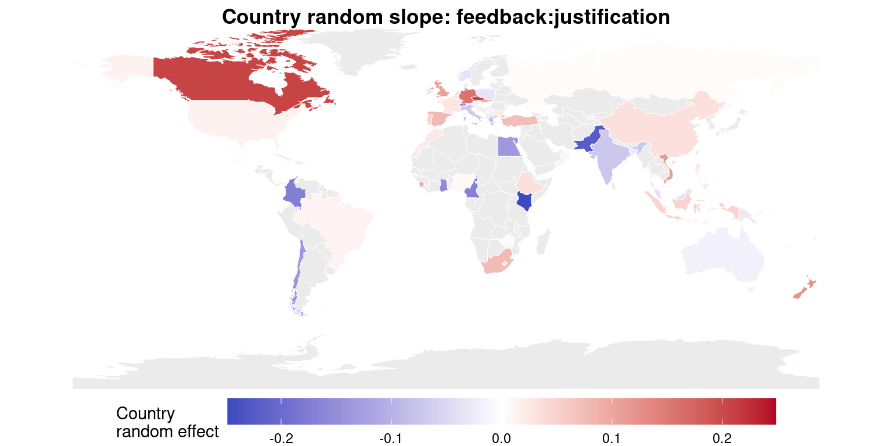
9 By-problem & by-participant random intercepts
As there were different participants in different groups, once I enter participant as grouping factor of random effects the variance associated with country-specific random slopes goes to zero (as variability is better accounted for as individual differences) and the model return singular fit. However, the below model with 3 crossed random effects fits well
mH1_all <- glmer(correct_phase2 ~ feedback * justification +
(1|Country)+ (1|problem) + (1|participant),
family = binomial("logit"), data = dat_H1,
control = glmerControl(optimizer = "bobyqa",
optCtrl = list(maxfun = 1e5)))
summary(mH1_all)Generalized linear mixed model fit by maximum likelihood (Laplace
Approximation) [glmerMod]
Family: binomial ( logit )
Formula: correct_phase2 ~ feedback * justification + (1 | Country) + (1 |
problem) + (1 | participant)
Data: dat_H1
Control: glmerControl(optimizer = "bobyqa", optCtrl = list(maxfun = 1e+05))
AIC BIC logLik deviance df.resid
30322.6 30379.4 -15154.3 30308.6 24583
Scaled residuals:
Min 1Q Median 3Q Max
-2.6319 -0.9523 0.5144 0.6962 2.1793
Random effects:
Groups Name Variance Std.Dev.
participant (Intercept) 0.3657 0.6047
Country (Intercept) 0.2516 0.5016
problem (Intercept) 0.2543 0.5042
Number of obs: 24590, groups: participant, 11038; Country, 53; problem, 6
Fixed effects:
Estimate Std. Error z value Pr(>|z|)
(Intercept) 0.24851 0.22030 1.128 0.259
feedback 0.39653 0.04464 8.884 <2e-16 ***
justification 0.26481 0.04591 5.769 8e-09 ***
feedback:justification -0.06031 0.06278 -0.961 0.337
---
Signif. codes: 0 '***' 0.001 '**' 0.01 '*' 0.05 '.' 0.1 ' ' 1
Correlation of Fixed Effects:
(Intr) fedbck jstfct
feedback -0.108
justificatn -0.105 0.524
fdbck:jstfc 0.077 -0.706 -0.729